Explore the traditions, craftsmanship and indigenous
practices that make Manipur unique.
EXPLORE
Discover what makes
Manipur unique.
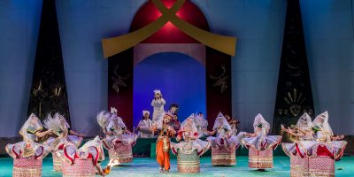
Raas Leela
Raas Leela is one of the most celebrated
classical dance traditions of Manipur,
known for its graceful movements and
devotional expression.
Raas Leela is a classical dance form
deeply associated with the cultural
traditions of Manipur.
Its performances portray the divine
love between Radha and Krishna through
graceful movements, music, expressions
and storytelling.
The dance remains an important part of
Manipuri cultural identity and is
recognised for its distinctive style
and graceful movement.
Image credit: Dinesh Sharma
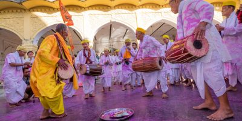
Nupa Pala
Nupa Pala is a traditional Manipuri
performance combining music, rhythm,
singing and graceful movement.
Nupa Pala is an important traditional
performance of Manipur that combines
singing, rhythm and movement.
Performers present the tradition through
coordinated musical and physical
expression, making it an important part
of Manipuri performing arts.
Image credit: Dinesh Sharma
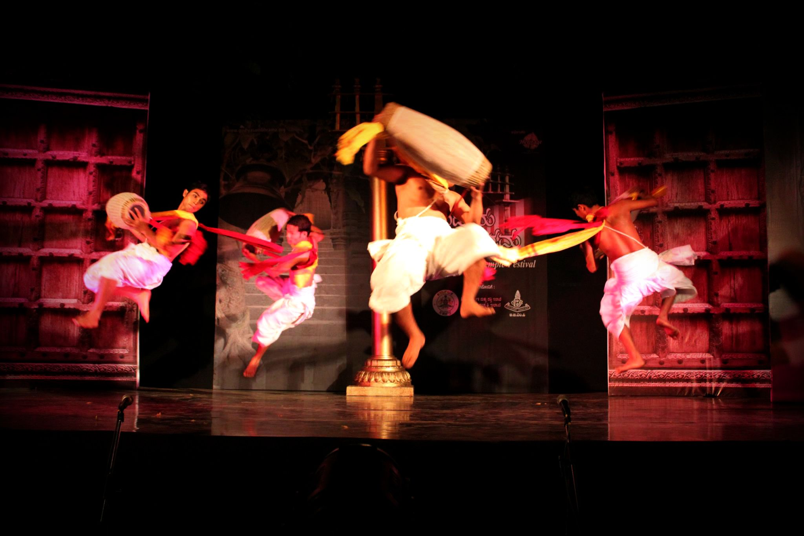
Pung Cholom
Pung Cholom is a dynamic Manipuri
performance centred around the traditional
drum known as the pung.
Pung Cholom combines percussion and
energetic movement into a distinctive
Manipuri performance.
Performers play the traditional pung
while simultaneously performing
rhythmic movements and coordinated
sequences.
The combination of music, rhythm and
movement makes Pung Cholom one of the
recognisable performance traditions
of Manipur.
Image credit: Dinesh Sharma
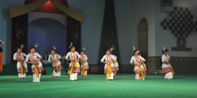
Maibi Dance
Maibi Dance is an important traditional
ritual dance associated with the cultural
and spiritual traditions of the Meitei people.
Maibi Dance forms part of traditional
ceremonies and rituals and preserves
important elements of the cultural
heritage of Manipur.
The dance is performed by Maibis and
uses traditional movements and
symbolism connected with the cultural
and spiritual traditions of the Meitei
community.
Image credit: Maaibi Dance of the Meiteis
at Manipur Sangai Festival
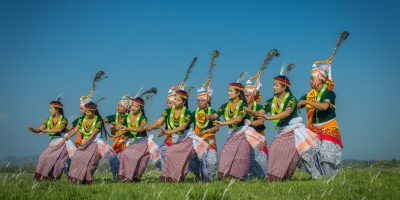
Khamba Thoibi Dance
Khamba Thoibi is a traditional dance
associated with the legendary story of
Khamba and Thoibi.
The performance forms an important
part of Manipuri cultural tradition
and presents elements of storytelling,
graceful movement and traditional
expression.
The dance is connected with the
traditional story of Khamba and Thoibi
and continues to be represented through
cultural performances.
Image credit: courtesy Pintu Oinam
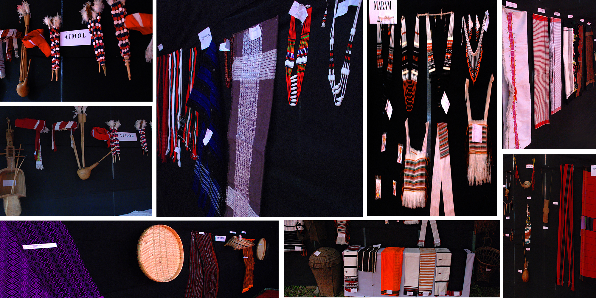
Manipuri Handloom
Manipur enjoys a distinct place amongst
the Handloom zones in India. Handloom
industry is the largest cottage industry
in the State.
This industry has been flourishing
since time immemorial. One of the
special features of the industry is
that women are the only weavers.
According to the National Handloom
Census Reports 1988 there are about
2.71 lakh looms in Manipur.
It is believed that Chitnu Tamitnu,
a goddess, discovered the cotton and
she also produced the yarn.
When the threads are ready for
weaving she arranged the required
equipments and constructed the
'Sinnaishang' (work shed).
It is also believed that the goddess
Panthoibee once saw a spider producing
fine threads and making cobwebs and
from it she found the idea of weaving
and thus started weaving.
Most of the weavers who are famous
for their skill and intricate
designing are from Wangkhei,
Bamon Kampu, Kongba, Khongman, Utlou
etc. in respect of fine silk items.
The rest of the villages of the State
produce all varieties of fabrics.
Tribal shawls with exotic designs
and motifs are products of the hill
districts of the State.
Fabrics and Shawls of Manipur are in
great demand in the national and
international market.
Today, major handloom production
activities are undertaken by three
Government organizations namely:
Manipur Development Society (MDS)
Manipur Handloom and Handicrafts
Development Corporation (MHHDC)
Manipur State Handloom Weavers
Co-operative Society (MSHWCS)
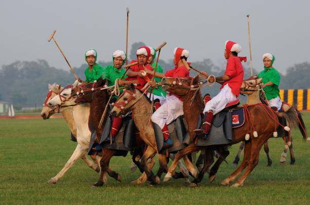
Sagol Kangjei
Sagol Kangjei is the traditional form
of polo played in Manipur.
Sagol Kangjei is the traditional
form of polo and is associated
with the origins of modern polo.
Two teams of seven players compete
using Manipuri ponies, which are
generally around 4–5 feet in height.
Players use traditional sticks made
from bamboo roots. The game is played
in both the Pana and international
styles.
The game represents an important
part of the sporting heritage of
Manipur, with Manipuri ponies often
decorated for the occasion.
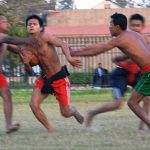
Yubi Lakpi
Yubi Lakpi, meaning "coconut snatching",
is a distinctive traditional game
of Manipur.
The game is played on a grass field
with seven players on each side.
A coconut is used as the ball and
players attempt to carry it towards
the goal.
The game has traditionally been
associated with palace and temple
grounds and remains a distinctive
part of Manipuri sporting tradition.
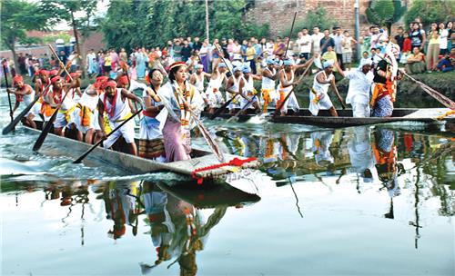
Hiyang Tannaba
Hiyang Tannaba is a traditional boat race
generally held in November at Thangapat,
the historic moat.
The boats, known as Hiyang Hiren,
have spiritual significance and
the event is associated with
religious rites.
Participants traditionally appear
in ceremonial dress and headgear,
combining sporting activity with
cultural and religious traditions.
Mukna
Mukna is the traditional wrestling
practice of Manipur.
Competitors test their strength
and skill against each other.
Wrestlers are matched according to
physical build, weight and age.
Mukna has long enjoyed popularity
and prestige in Manipuri society
and has also been associated with
royal patronage.
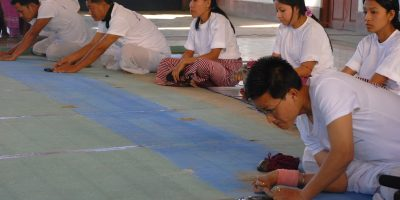
Kang
Kang is a traditional Manipuri game
played on a mud floor using a flat
oblong object.
The Kang object was traditionally
made from materials such as ivory
or lac. Players strike targets
during the game.
The game can be played in teams of
seven and in mixed doubles.
The traditional playing period
extends from Cheiraoba to Rath Yatra.
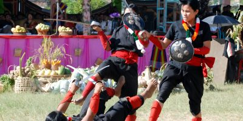
Thang-Ta & Sarit Sarat
Thang-Ta and Sarit Sarat are traditional
martial arts passed through generations.
These traditional martial arts were
historically associated with combat
skills and physical preparedness
during periods of peace.
Training emphasises discipline,
physical skill and technique.
The traditions continue under
established customs, rituals and
rules passed through generations.
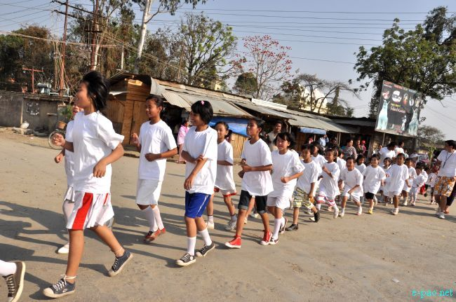
Other Indigenous Games
Manipur has many other traditional games
and physical activities that form part
of its indigenous sporting heritage.
Lamjel is a traditional foot race
associated with physical endurance
and competition.
Mangjong is a traditional broad-jump
activity that demonstrates physical
strength, agility and skill.
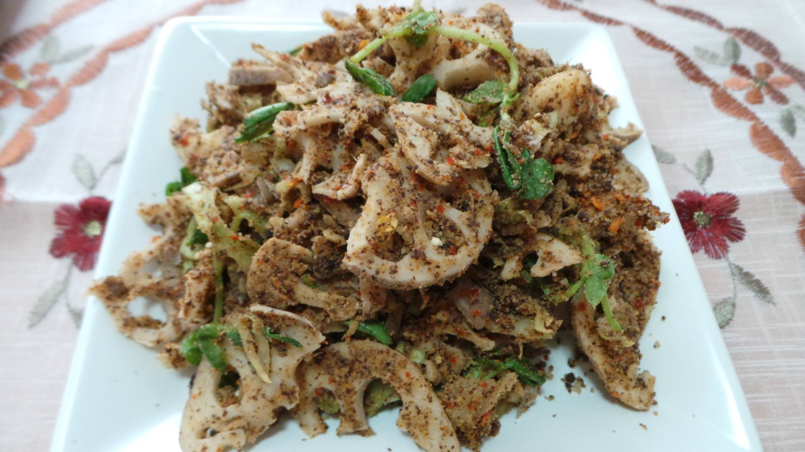
Singju
A burst of freshness with a fiery Manipuri
character, Singju is a traditional salad made
with seasonal vegetables, herbs and local
ingredients.
A burst of freshness with a fiery Manipuri
character. Singju is a traditional Manipuri
salad made with finely sliced seasonal
vegetables, herbs and local ingredients such
as lotus stem and cabbage.
Its distinctive flavour comes from roasted
perilla seeds and chickpea flour, or
traditionally from ngari (fermented fish).
Crunchy, fresh and often spicy, Singju is
enjoyed as a snack or accompaniment and
reflects Manipur's love for seasonal produce
and bold local flavours.
Traditional Manipuri cuisine
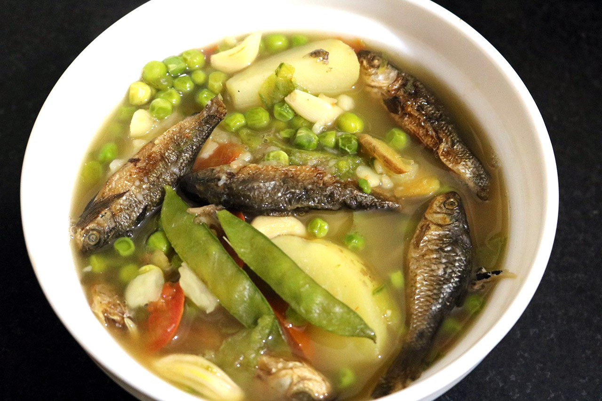
Chamthong / Kangsoi
A simple and comforting vegetable stew rooted
in everyday Manipuri cooking, prepared with
seasonal greens and locally available
ingredients.
Simple, comforting and deeply rooted in
everyday Manipuri cooking. Chamthong, also
known as Kangsoi, is a light vegetable stew
prepared with seasonal greens and vegetables,
onions, herbs, ginger and other local
ingredients.
It may be finished with dried or fermented
fish, giving the broth its characteristic
depth. Served hot with rice, this humble dish
offers a gentler introduction to Manipuri
cuisine while showcasing the importance of
fresh, locally available ingredients.
Traditional Manipuri cuisine
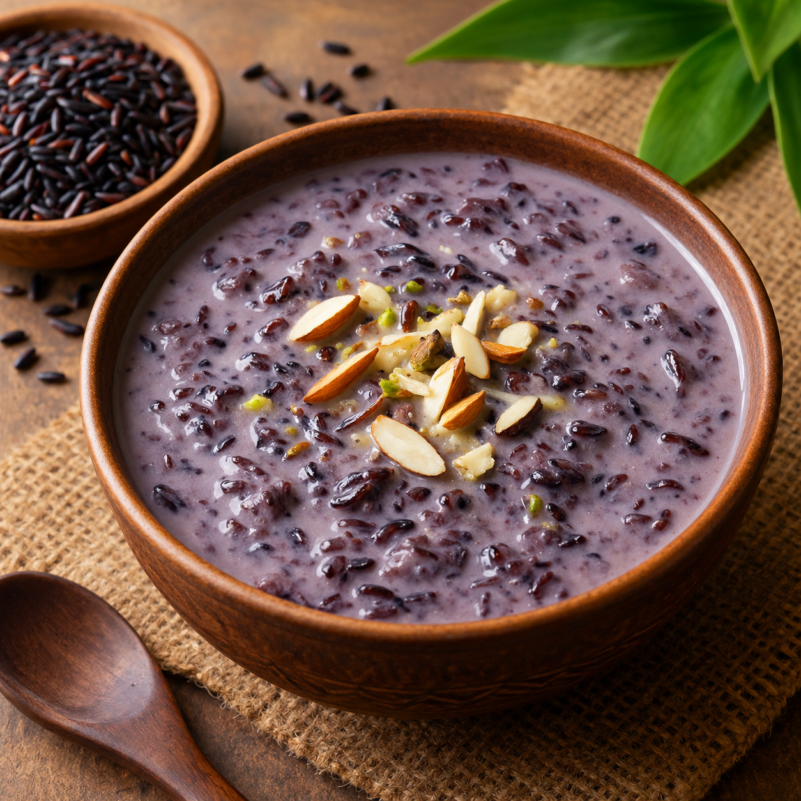
Chak Hao Kheer
A distinctive traditional rice pudding made from
Manipur's aromatic black rice, known locally as
Chak-Hao.
A dessert with a colour as distinctive as its
heritage. Chak Hao Kheer is a traditional rice
pudding made from Manipur's aromatic black
rice, known locally as Chak-Hao.
The naturally dark grains transform into a
deep purple shade when cooked, creating a
striking dessert with a fragrant, slightly
nutty character.
Chak-Hao has been cultivated in Manipur for
generations and received a Geographical
Indication (GI) tag in 2020, making this more
than just a dessert—it is a taste of Manipur's
agricultural heritage.
Traditional Manipuri cuisine
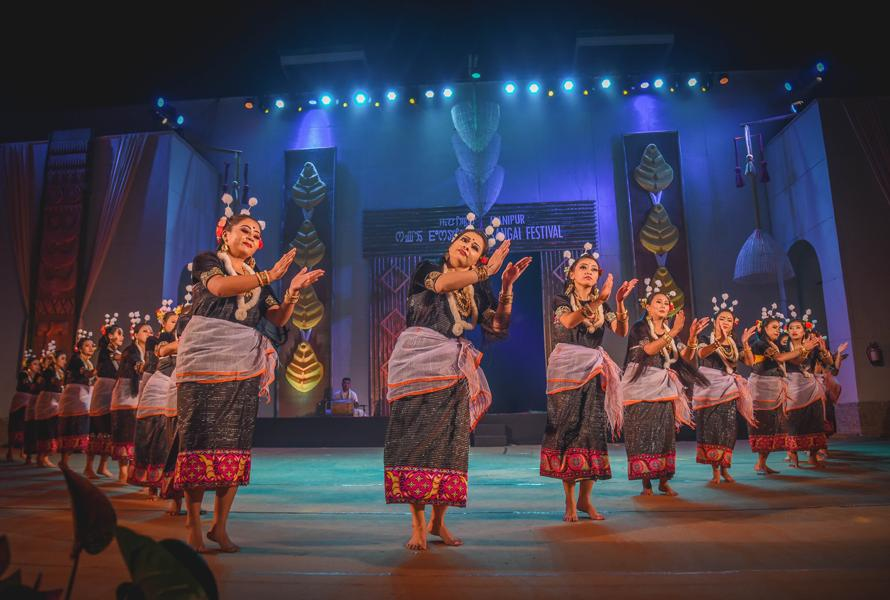
Sangai Festival
A celebration that brings together Manipur's
culture, traditions, crafts, food and
performances.
The Sangai Festival showcases the cultural
richness of Manipur through traditional
performances, crafts, food and other
experiences.
It provides an opportunity to experience
different aspects of the state's cultural
traditions in one celebration.
Sangai Festival
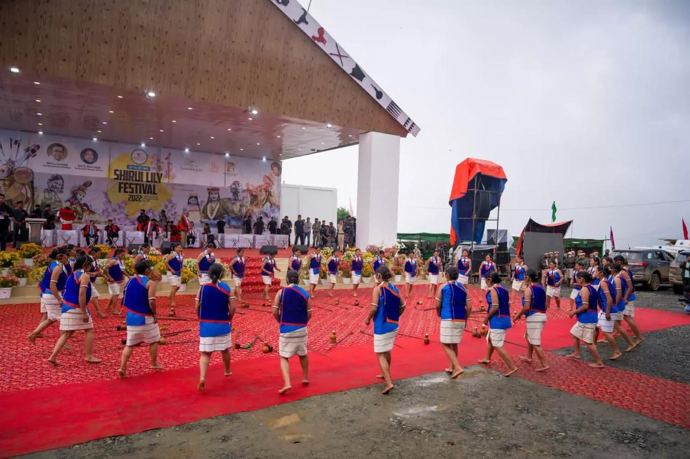
Shirui Lily Festival
A celebration centred around the Shirui Lily
and the natural and cultural heritage of
Ukhrul.
The Shirui Lily Festival celebrates the
natural and cultural identity of Ukhrul,
bringing attention to the region and its
distinctive landscape.
The festival connects nature, local culture,
performances and community experiences.
Shirui Lily Festival
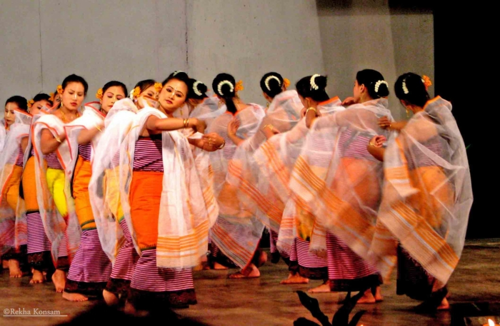
Lai Haraoba
An important traditional celebration featuring
rituals, music, dance and performances connected
with Meitei cultural traditions.
Lai Haraoba is a traditional celebration
associated with the worship of local
deities and the preservation of cultural
traditions.
Rituals, music, dance and performances form
an important part of the celebration,
connecting cultural practices with community
life.